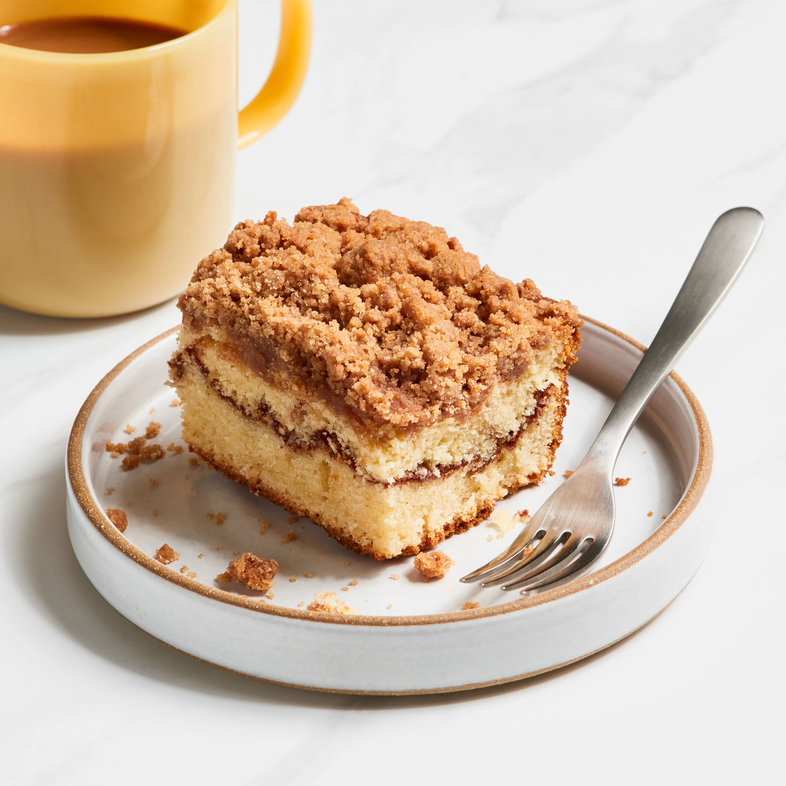

Coffee Cake!
Return to homepage.

Description
This coffee cake is the best!
Ingredients
- Flour
- Sugar
- Salt
- Cinnamon
- Butter
Steps
- Preheat the oven
- Make the streusel layer
- In a small bowl, mix flour, sugar, and cinnamon
- Make the batter
- Add flour, sugar, baking powder, and baking soda together
- Stir low until fully mixed
- Bake the cake
Note: Please don't actually use this recipe, I made this all up